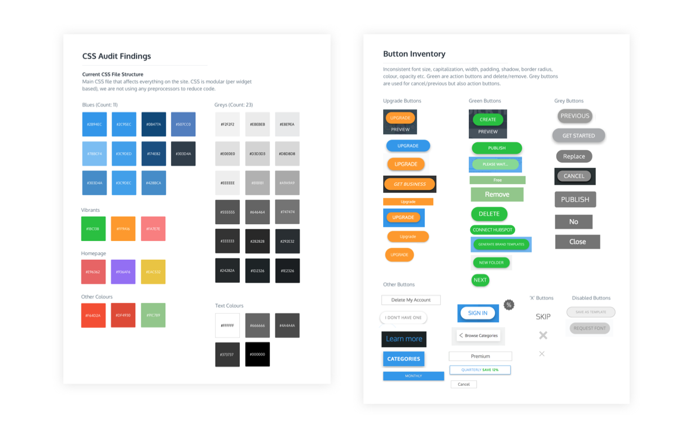
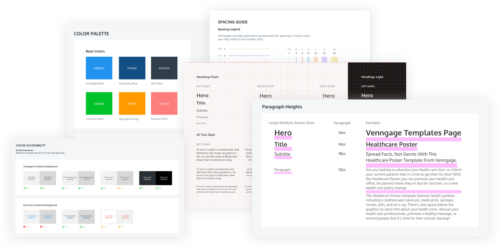

VENNGAGE
Within 6 months, the design team at Venngage grew from 3 product designers to a team of 9 designers across 5 squads. It became more difficult to onboard new designers to an undocumented system. Design and code could not be reused which reflected in slower output.
As the Product Lead, I had the opportunity to build the foundation of the Venngage Design System, prioritize components and lead cross-functional teams to build the foundation of scalable designs.
My Role
Design Lead
Timeline
May - Nov 2019
Deliverables
Design System, Living Documentation
A Design System is a living documentation of all the components used to create a product. From the ‘atoms’ such as what colours are used to the tonality and values that the company strives to deliver to their customers.
The reason for introducing a design system is to allow people to work better. “Design systems are a language. The product is a conversation”. Design and code are connected because they essentially represent the same ideas. When everyone is speaking the same language, that's when we're able to get things done.
The goal of the project is to create a system of design moving forward by:
Project Scope: Start small and ship often in order to deliver immediate value to the team. Components would be deligated to designers across various squads, reviewed by the product lead and available for use in a Sketch library. We needed to define the design system before it could be translated into code.
Long Term Goal: To speed up development by increasing the number of fully reusable components.
Before diving into the project, I interviewed a few designers in the industry to learn about existing design systems and how others have approached this challenge. I learned that building a design system is a lengthy process (1-3 years) and requires ongoing effort from a cross-functional team.
Based on Brad Frost's Atomic Design and UX Pin's design system structure, I was able to select and modify processes to create one that would best fit the goal of this project. [Part One] focuses on determining which naming conventions we would use and creating the 'building blocks' of design (a unified colour palette, typographic scale, icon inventory, grid system, spacing and styling guidelines) while [Part Two] uses these basics to build a pattern library. Over time, complex components and sections could be used to create functional pages.
Since Venngage is an existing application, it was more important to consolidate inconsistencies and prioritize UI patterns that are frequently reused rather than changing the grid structure.

Right: UX Pin's Roadmap structure. Left: Project broken down into steps with requirements.
I knew that this project would be quite different from other projects that I've worked on. "A design system isn't a product, it's a product serving products" (Nathan Curtis, Modular Web Design). Thankfully, I had reference to Brad Frost's Atomic Design as well as online design system repos (which included Shopify's Polaris, Salesforce Lightning, IBM Carbon and Google's Material Design) to help me deconstruct the steps I needed to take to tackle this project.
An interface inventory or a site audit is a collection of all the various UI components that make up a website or application. To create this inventory, I assigned a screenshot exercise to members of different teams. Each person was responsible for a specific page or UI pattern. This exercise helped surface inconsistencies across the site and establish a common ground that could then be built upon. The team would then be able to understand what we were working with and why it was important.
Google drive helped us keep everything in one place.
Conducting a CSS colour audit revealed that, 'Venngage Blue' (the company's primary brand colour) actually consisted of 11 different blues and there were over 23 shades of grey across the site. However, the vibrant colours used for primary CTAs and paid features remained consistent!
The issue was that there were no brand guidelines. Instead, designers would build over top of screenshots and use external colour pickers to extract colours directly from the interface. Even the icons were pulled from external icon inventories.
A summary of the site's current state of UI.
Using the findings from the previous step, I began creating style guides and rules to standardize the use of visual elements across the site. These “basics” included colour palettes, colour accessibility, typography, an icon inventory, grid system, spacing, supported device types as well as styling details (such as border radius, box shadow, hovers, transitions). Examples were also created to show how elements would be used together. Throughout the process, I presented and reviewed changes with the product team. Guides were available for use at the end of each sprint.
Building the pattern library required us to prioritize components based on value, cost and complexity. We would tackle components that were high in value and low on cost and complexity first (ex. buttons, search bar) before components that were used less infrequently. This would be an ongoing process executed on a weekly/bi-weekly basis.
Building reusable pages with component library.
As this project has progressed, I've learned a lot about existing design system methodologies such as Atomic Design. I have adapted a "Design System First" mentality where the product is no longer the end result. A design system is instead an ecosystem that needs to be maintained and grows as the product grows.
I also learned how to build text and styling layers in Sketch as well as some useful plugins. I've learned about how to get buy-in from upper management, how to organize design files, communicate tasks/expectations, various tools for version control in design, gathering feedback and performing retrospectives on a project-level.